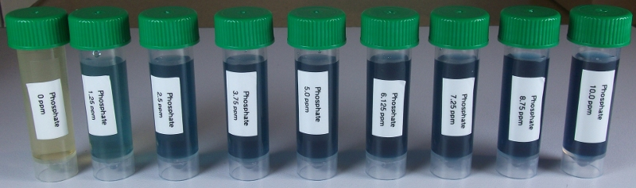

API phosphate test kit¶

Reagents & Equipment¶
- Assembled colorimeter
- 5 mL sample bottles or other capped tubes
- API phosphate test kit
- Timer
- Cuvettes
Colorimeter set-up¶
- Wavelength: 625 nm. Use Red led (colorimeter RGB board).
- Phosphate standard data: download a data file or prepare your own phosphate standard data
- Before measuring blank the colorimeter against water or a distilled water sample developed with API reagent as described below
Method¶
IMPORTANT: This is a time-sensitive assay. Before starting make sure you read through the instructions below. You will need to use a timer to measure your sample 5-10 mins after adding Bottle # 2. After approximately 10 mins the solution becomes cloudy and you will not get an accurate reading.
- Fill an empty sample bottle to the 5 mL line with your water sample.
- Add 6 drops of Bottle # 1 to the sample, cap and invert several times to mix
- Add 6 drops of Bottle # 2 and start timer.
- Note the time since adding Bottle # 2. When it has been between 5-10 minutes, pour some of your sample into a cuvette, place in the colorimeter and click measure. The program will return the phosphate concentration in ppm.